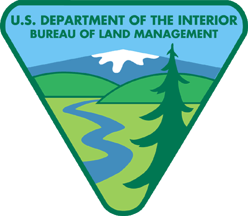
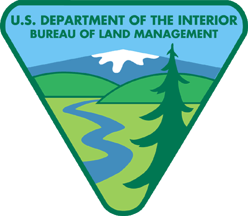

U.S. Forest Service

U.S. Fish and Wildlife Service

Office of Federal Lands Highway

National Park Service
US Army Corps of Engineers

Bureau of Land Managment
U.S. Forest Service |
U.S. Fish and Wildlife Service |
Office of Federal Lands Highway |
National Park Service |
US Army Corps of Engineers |
 Bureau of Land Managment |